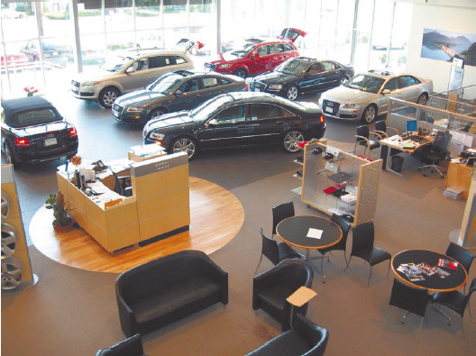
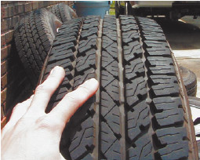

Проверка комплектации
При покупке автомобиля следует учитывать, что цена может изменяться в зависимости от комплектации: какие покрышки стоят на машине, какого производителя, какая аудиоаппаратура, имеются ли дополнительные «примочки» (обтекатели, боковые пороги, сетка в багажнике и т. д.). Нередко случается, что недобросовестные продавцы пользуются эйфорией неопытного покупателя (ведь он вот-вот станет владельцем автомобиля!) и заменяют комплектацию, показанную при первом осмотре или оговариваемую устно, совершенно другой, более дешевой. В результате, конечно же, получается переплата за автомобиль, и иногда она бывает довольно существенной.
Не следует думать, что подобным занимаются только продавцы на авторынке. В автомобильном салоне могут обмануть точно так же (рис. 1.5). К примеру, вместо покрышек Bridgestone, которые были оговорены изначально, вам могут поставить покрышки Kumho, которые намного дешевле. К тому же в автосалоне обмануть неопытного покупателя гораздо проще – он загипнотизирован видом новенького, с иголочки, автомобиля, он не ждет подвоха от работников салона (это ведь солидная организация, а машина стоит немалых денег!).

Рис. 1.5. В автосалоне тоже нужно быть начеку!
Для того чтобы исключить подобный обман, достаточно тщательно проверять комплектацию, принимая автомобиль. И если вам положены покрышки Bridgestone, если вы изначально выбрали машину именно с этими покрышками, то пусть их и поставят (рис. 1.6). Учтите, что комплектация автомобиля часто указывается в договоре (при покупке в автосалоне), и достаточно всего лишь сверить пункты договора с реальной машиной, чтобы выявить обман. И вообще всегда читайте договор!

Рис. 1.6. Проверяйте покрышки, не отходя от кассы!
Совет
Внимательный осмотр автомобиля еще на стадии выбора, осмотр всех деталей, мелочей и проверка комплектации отбивают почти у всех продавцов желание что-либо заменить. Поэтому следует отложить эйфорию от покупки на потом – на то время, когда автомобиль (со всей полагающейся ему комплектацией) надежно пропишется в вашем гараже, и продемонстрировать продавцу свою внимательность даже к мелочам.
Перечень того, что обычно подменяют в автосалонах более дешевыми аналогами, приведен ниже.
? Радио– и стереоаппаратура (магнитола, CD-проигрыватель и т. п.), включая колонки.
? Резина на колесах либо колеса в сборе.
? Сигнализация и иные противоугонные средства.
? Коврики в салоне и багажнике (могут вообще отсутствовать, хотя должны входить в комплект).
? Аккумулятор.
Помимо перечисленных, могут быть подменены и другие элементы оборудования – здесь многое зависит от конкретного автомобиля и от наглости работников автомобильного салона.
Приобретая автомобиль в автосалоне, следует также ознакомиться с рекомендациями не только продавцов, но и производителя (в Интернете можно найти все, что для этого требуется). Дело в том, что в некоторых случаях консультанты технических центров могут одобрить запчасти, не рекомендованные производителем автомобиля (покрышки, колесные диски и т. п.)! В результате человек пользуется такими запчастями или комплектующими, а при проведении очередного гарантийного технического обслуживания выясняется, что на машине установлены не рекомендованные производителем детали, что является основанием для снятия машины с гарантийного обслуживания.